자기비파괴검사기능사 (2002-01-27 기출문제)
1과목: 자기탐상시험법
1. 연강을 자계의 가운데에 놓으면 자석이 되고, 바깥에 내 놓으면 자석이 되지 않는 현상을 무엇이라 하는가?
- 자극화
- 자기감응
- 투자성
- 누설자속
(정답률: 48%)

2. 그림 중에서 봉강을 교류전류로 검사할 경우의 자장 분포로 맞는 것은?
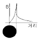
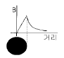
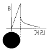
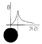
(정답률: 40%)
3. 직경이 40mm, 길이가 200mm인 봉강을 코일법으로 자분탐상시험하려고 한다. 이 때 9,000[A]의 자화전류가 필요하다면 코일의 감은 수는 몇 회이어야 하는가? (단, 장비의 최대 전류치는 3,000[A]이다.)
- 1회
- 2회
- 3회
- 4회
(정답률: 53%)
4. 자분탐상시험의 중요 3가지 분류에 적합치 않은 것은?
- 검사할 시험편의 상자성화
- 검사할 시험편의 자화
- 시험할 표면에 자분적용
- 자분에 의한 지시모양의 관찰 및 기록
(정답률: 69%)
5. 자분탐상검사법중 건식법의 장점은?
- 표면하 부근 결함검출에 유리
- 습식법보다 감도가 좋다.
- 대형물에 적합하다.
- 소형의 다량 제품에 적합하다.
(정답률: 30%)
6. 그림의 자기이력곡선에서
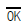
는 무엇을 나타내는가?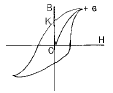
- 잔류자기
- 포화점
- 투자력
- 항자력
(정답률: 46%)
7. 어떤 물질을 자화시키고자 할 때 가해지는 자장강도와 자화력의 관계를 도표로 그린 곡선은?
- 자력선
- 자기이력곡선
- Sine 곡선
- French 곡선
(정답률: 86%)
8. 막대자석을 원형으로 구부려 양끝을 서로 맞대어 폐회로를 이룬다면?
- 극성이 증가한다.
- 자화력이 증가한다.
- 자극을 잃는다.
- 극성이 감소한다.
(정답률: 58%)
9. 다음 비파괴검사법 중 강자성 재료의 피로균열 검사에 가장 적합한 것은?
- 방사선투과검사
- 초음파탐상검사
- 자분탐상검사
- 누설탐상검사
(정답률: 70%)
10. 다음 중 의사지시가 나타날 수 있는 가장 큰 원인은?
- 부적절한 검사조작과 자장의 불균일한 분포
- 적절한 전류와 검사품 두께의 변화
- 완숙한 검사조작과 장비의 성능저하
- 검사품의 자기적 충격과 새로운 검사액(자분) 적용
(정답률: 60%)
11. 수동아크 용접부의 중앙에 미세한 그물모양의 자분지시가 건식법으로는 잘 나타나지 않으나 습식법에서는 선명하게 나타났다면 이는 무슨 결함인가?
- 융합불량(LF)
- 기공(Porosity)
- 크레이터 균열
- 언더컷
(정답률: 62%)
12. 전류가 흐르고 있는 도체나 반도체에 전류와 직각방향으로 자장을 가하면 그 사이의 직각방향으로 전위차가 생기는 현상을 무엇이라고 하는가?
- Hall Effect
- Resonance Effect
- EMAT
- Tomson Effect
(정답률: 40%)
13. 미세한 자성체의 입자들을 기름(oil)용액속에 분산, 현탁시킨 검사액을 사용하는 자분탐상검사 방법을 무엇이라 하는가?
- 스프레이법
- 침적법
- 기름현탁법
- 습식법
(정답률: 29%)
14. 프로드법에 의한 자분탐상시험시 자화전류의 세기를 결정할 때 다음 중 가장 영향을 미치는 요인은?
- 프로드간의 간격
- 부품의 두께
- 부품의 길이
- 부품의 직경
(정답률: 67%)
15. 검사체 표면으로부터 깊게 위치한 결함을 탐지하는데 가장 좋은 자분탐상시험법은?
- 직류를 사용한 건식 잔류 자기법
- 반파 직류를 사용한 습식 연속자화법
- 직류를 사용한 건식 연속자화법
- 교류를 사용한 건식 연속자화법
(정답률: 38%)
16. 선형자화법에서 자계 강도를 구하는 공식으로 맞는 것은?(단, L은 길이, D는 직경)
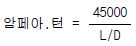
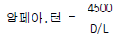
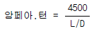
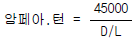
(정답률: 61%)
17. 자분탐상시험시 검사체를 선형자화하는 방법은?
- 중심도체에 전류를 흐르게 한다.
- 전류가 흐르고 있는 코일안에 부품을 놓는다.
- 부품의 길이 방향으로 전류를 흐르게 한다.
- 접촉부 양면에 중심도체를 연결한다.
(정답률: 43%)
18. 형광자분을 사용하는 자분탐상시험시 광원으로부터 38cm떨어진 시험체 표면에서 자외선등의 강도는 최소한 얼마이상이어야 하는가?
- 500μW/cm2
- 800μW/cm2
- 1,200μW/cm2
- 1,500μW/cm2
(정답률: 75%)
19. 자분탐상시험에 사용되는 자외선등의 필터(filter)는 깨진 것을 사용하면 안되는 이유로 다음 중 옳은 것은?
- 작업자의 눈에 실명을 입힐 우려가 있기 때문이다.
- 과도한 자외선 방출로 작업자가 방사선을 피폭받기 때문이다.
- 시험체 표면에서 자외선의 강도가 너무 강하여 결함 검출에 영향을 주기 때문이다.
- 작업자의 피부를 보호하기 위해서이다.
(정답률: 57%)
20. 자분탐상시험 장비의 보수점검시 전류계(ammeter)의 점검주기로 다음 중 옳은 것은?
- 시험시작 때마다 점검해야 한다.
- 매일 점검해야 한다.
- 1주일에 1회 이상 점검해야 한다.
- 1년에 1회이상 점검해야 한다.
(정답률: 61%)
2과목: 자기탐상관련규격
21. 잔류법으로 자분탐상시험을 실시할 때 시험체가 서로 접촉하거나 또는 강자성체에 접촉했을 때 누설자속에 의해 형성되는 의사모양의 자분지시를 무엇이라 하는가?
- 재질경계지시
- 전류지시
- 자극지시
- 자기펜 흔적
(정답률: 38%)
22. 다음 중 자장이 가장 강할 때는 언제인가?
- 자화전압이 변할 때
- 자화전류가 흐를 때
- 재료가 높은 항자력을 보일 때
- 자화전류가 흐르지 않을 때
(정답률: 64%)
23. 다음 중 자속밀도(Flux Density)의 표시 단위는?
- 가우스(Gauss)
- 헨리(Henry)
- 페러드(Farad)
- 암페어(Ampere)
(정답률: 10%)
24. 다음 비파괴검사법중 표면 검출에 가장 적합한 것은?
- 초음파탐상시험
- 침투탐상시험
- 방사선투과시험
- 중성자투과시험
(정답률: 80%)
25. 자분탐상시험에서 지시의 관찰시 고려해야 할 인자가 아닌 것은?
- 자계의 방향
- 지시의 방향 및 형상
- 누설 자계의 세기
- 시험체의 크기
(정답률: 43%)
26. KS D 0213에 따른 A형 표준시험편에 대한 설명으로 올바른 것은?
- 시험편의 명칭 가운데 괄호안은 자분의 모양을 나타낸다.
- 시험편에의 자분의 적용은 연속법으로 한다.
- 시험편은 인공 흠이 있는 면이 시험면에 밀착되도록 용접하여 시험면에 붙인다.
- 시험편은 초기의 모양, 치수, 자기특성에 일부 변화를 일으켰을 때에도 그대로 사용한다.
(정답률: 83%)
27. KS D 0213에서 사용되는 A형 표준시험편에 표준으로 사용되는 인공결함의 모양은?
- 십자형, 원형
- 원형, 직선형
- 오목형, 돌출형
- 코나형, 장방형
(정답률: 74%)
28. KS D 0213에 따라 시험조건의 기호를 기록할 때 P-1000꿴에 대한 설명 중 올바른 것은?
- 극간법 사용
- 시험물 길이 1000mm
- 충격전류를 사용
- 탈자를 시행
(정답률: 38%)
29. KS 규격에 의한 자분의 모양을 기재할 때 기록하지 않아도 되는 사항은?
- 제조자명
- 형번호
- 색, 입도
- 자분형태
(정답률: 10%)
30. KS D 0213에서 자분모양의 분류시 다음 중 독립한 자분모양으로 분류되는 것은?
- 균열에 의한 자분모양
- 선상의 자분모양
- 연속한 자분모양
- 분산한 자분모양
(정답률: 45%)
31. 다음 중 KS D 0213에서 시험방법의 분류를 올바르게 연결한 것은?
- 자분의 적용시기 : 건식법, 습식법
- 자분의 분산매 : 연속법, 잔류법
- 자화전류의 종류 : 극간법, 코일법 등
- 자분의 종류 : 형광자분, 비형광자분
(정답률: 71%)
32. 다음 중 KS규격에 의한 자화방법의 분류부호가 올바르게 표시된 것은?
- 축통전법 : ER
- 직각통전법 : EA
- 프로드법 : C
- 극간법 : M
(정답률: 78%)
33. KS D 0213에서 용접부의 자분탐상시험시 전처리의 범위는 시험범위보다 넓게 잡아야 하는데 모재측으로부터 원칙적으로 얼마나 넓게 잡도록 규정하고 있는가?
- 약 10mm
- 약 20mm
- 약 50mm
- 약 100mm
(정답률: 50%)
34. KS D 0213에 규정한 탐상에 필요한 자계의 강도가 올바르게 설명된 것은?
- 일반적인 용접부를 연속법으로 탐상시 500 ∼1200A/m
- 퀜칭한 기계부품을 연속법으로 탐상시 2500A/m이상
- 일반적인 퀜칭한 부품을 잔류법으로 탐상시 6400∼8000A/m
- 공구강 등의 특수계 부품을 잔류법으로 탐상시 1500A/m이상
(정답률: 64%)
35. KS규격에 의한 표준시험편 A1-15/100의 설명으로 맞는 것은?
- 사선의 오른쪽이 판의 두께, 사선의 왼쪽이 인공흠의 깊이를 나타내는 수치이다.
- 사선의 왼쪽이 판의 두께, 사선의 오른쪽이 인공흠의 깊이를 나타내는 수치이다.
- 이 때의 치수단위는 mm로 한다.
- 이 때의 치수단위는 cm로 한다.
(정답률: 41%)
36. KS D 0213의 자분탐상시험 장치 중에서 자분 및 검사액에 대하여 바르게 설명한 것은?
- 검사액 및 자분은 필요에 따라 버너로 태워서 그 성능을 확인하여야 한다.
- 자분의 입도는 육안으로 측정하여 입자의 크기를 대, 중, 소로 표시하여 기록해 둔다.
- 검사액속의 자분 분산농도는 자분의 무게를 단위용적으로 나눈 값을 말하며 %로 표시한다.
- 습식법에는 등유, 물 등을 분산매로 하여 필요에 따라 적당한 방청제 및 계면활성제를 넣은 검사액을 사용한다.
(정답률: 60%)
37. KS 규격에 의하면 자외선조사장치가 필터면에서 38cm 떨어진 위치의 자외선강도 값이 얼마 이하일 때 수리 또는 폐기하여야 하는가?
- 1500μW/cm2
- 1500μW/m2
- 800μW/cm2
- 800μW/m2
(정답률: 63%)
38. 다음 중 KS D 0213(철강 재료의 자분탐상시험방법)의 목적은?
- 시험체 표면의 라미네이션 등 초음파탐상으로 검사가 어려운 결함을 검출하는 목적
- 부도체에 관계없이 표면의 결함을 검출하는 목적
- 시험체 내부의 기공 및 용입부족을 검출하는 목적
- 시험체의 표면 및 표면부근에 있는 균열, 기타 흠을 검출하는 목적
(정답률: 57%)
39. KS D 0213에 의한 용어의 정의가 잘못 설명된 것은?
- 자화전류란 시험품에 자속을 발생시키는데 사용하는 전류를 말한다.
- 택류란 주기적으로 크기가 변화하는 자화전류를 말한다.
- 분산매란 자분이 여러 검사체에 잘 분산되는 정도를 매수로 나타내는 것을 말한다.
- 검사액이란 습식법에 사용하는 자분을 분산 현탁시킨 액을 말한다.
(정답률: 34%)
40. KS D 0213에 따라 "시험품에 가한 교류전류나 교류 자속이 표면의 가까운 부분에 생기는 현상"을 무엇이라 하는 가?
- 교류효과
- 모서리 효과
- 표피효과
- 자속효과
(정답률: 65%)
3과목: 금속재료일반 및 용접일반
41. KS D 0213에 따른 자분탐상시험시의 주의사항을 바르게 설명한 것은?
- 잔류법을 사용시는 자화조작후 자분모양을 관찰할 때 다른 시험체를 접촉시키면 좋은 효과가 있다.
- 자기펜자국의 의사모양은 축통전법 사용시 발생하므로 프로드법을 사용하면 사라진다.
- 충격전류를 사용할 때는 일반적으로 통전시간이 길기 때문에 연속법을 사용하여야 한다.
- 전류지시는 전류를 작게 하거나 잔류법으로 재시험하면 자분모양이 사라진다.
(정답률: 60%)
42. 동소변태를 옳게 설명한 것은?
- 고체내에서 결정격자의 변화
- 고체내에서 전자격자의 활동
- 액체내에서 결정격자의 변화
- 기체내에서 결정격자의 변화
(정답률: 70%)
43. 소성가공이 아닌 것은?
- 단조
- 인발
- 주조
- 압연
(정답률: 40%)
44. 금속의 소성변형이 일어나는 원인과 관련이 깊은 것은?
- 비중
- 비열
- 경도
- 슬립
(정답률: 55%)
45. 시험편 파괴되기 직전의 단면적을 A, 원단면적을 Ao라 할때 단면 수축율의 산출공식은?
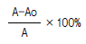
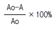
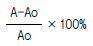
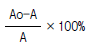
(정답률: 27%)
46. 금속 시료(試料)의 연마에서 전해 연마(electrolyticpolishing)는 어디에 속하는가?
- 쇼트 블라스트
- 중간 연마
- 미세 연마
- 샌드 블라스트
(정답률: 30%)
47. 미세 펄라이트(fine pearlite)라고도 하는 것은?
- 레데브라이트
- 페라이트
- 오스테나이트
- 결절상 투루스타이트
(정답률: 42%)
48. 고속도강(SKH)의 특징을 설명한것 중 옳지 못한 것은?
- 열처리에 의해 경화한다.
- 마멸성이 크다.
- 마텐자이트(martensite)는 안정되어 1900℃까지도 고속절삭이 가능하다.
- 열전도도가 나쁘므로 담금질온도에서 적당한 유지 시간이 필요하다.
(정답률: 34%)
49. 반도체 기판으로 가장 많이 사용되는 금속은?
- 납
- 구리
- 실리콘
- 철
(정답률: 50%)
50. 600℃ 에서 6 : 4 황동(muntz metal)의 평형상태도 조직은?
- α + β
- β + γ
- β
- α
(정답률: 61%)
51. 강(steel)의 고체 침탄법의 설명 중 옳지 않은 것은?
- 대량생산에 적합하지 않다.
- 균일가열에 의한 균일침탄이 힘들다.
- 침탄층의 조정이 어렵다.
- 코크스가루나 탄산바륨은 사용하지 않는다.
(정답률: 48%)
52. 금속을 냉간 가공하면 결정입자가 미세화 되어 재료가 단단해지는 현상은?
- 가공경화
- 시효경화
- 고용경화
- 석출경화
(정답률: 79%)
53. 금속적 성질과 비금속적 성질을 같이 나타낸 것은?
- 양성금속(metalloid)
- 중금속(heavy metal)
- 연성금속(ductility metal)
- 경금속(light metal)
(정답률: 62%)
54. 다음 원소 중 용접부의 용착금속 내에서 편석되면 가장 해로운 원소는?
- 규소(Si)
- 유황(S)
- 망간(Mn)
- 구리(Cu)
(정답률: 70%)
55. 이산화탄소 아크용접시 용착 금속 내에 생성되는 기공의 발생 원인이 아닌 것은?
- 가스 유량이 부족하다.
- 가스에 공기가 혼입되어 있다.
- 노즐과 모재간의 거리가 너무 짧다.
- 노즐에 스패터가 많이 부착되어 있다.
(정답률: 39%)
56. 용접부의 예열 목적에 대한 설명으로 틀린 것은?
- 수축응력 감소
- 용착금속의 경화 방지
- 수소성분의 이탈 촉진
- 냉각속도의 증가
(정답률: 54%)
57. 다음 중 UNIX에 대한 설명으로 옳지 않는 것은?
- 시분할 시스템이다.
- Bell 연구소에서 개발되었다.
- 멀티태스킹을 지원한다.
- 실시간 시스템이다.
(정답률: 39%)
58. Window 환경에서 공유된 폴더를 사용하기 위한 방법이 올바른 순서로 나열된 것은?
- 네트워크 환경- 컴퓨터 아이콘-공유 폴더-암호 입력
- 컴퓨터 아이콘-네트워크 환경-암호 입력-공유 폴더
- 네트워크 환경-암호 입력-컴퓨터 아이콘-공유 폴더
- 네트워크 환경-암호 입력-컴퓨터 아이콘-공유 폴더
(정답률: 40%)
59. Windows 98의 단축키에 대한 설명 중 바르게 연결되지 않은 것은?
- Ctrl + X : 잘라내기
- Ctrl + A : 복사하기
- Ctrl + V : 붙여넣기
- F5 : 새로 고침
(정답률: 53%)
60. HTML에서 ID, 패스워드 등을 입력하기 위해서 사용하는 것은 무엇인가?
- Form
- Table
- Link
- Frame
(정답률: 27%)